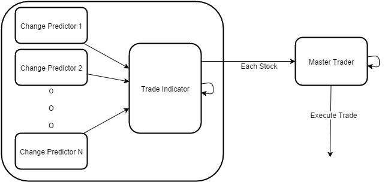

Introduction
This project is an attempt for me to evolve from being a poor college kid into a wealthy man. In all reality if this works, this page will probably be taken down. So if you read this and can't find it later, I'm probably living the good life.
I've always enjoyed playing with penny stocks, more volitile and more risky. Essentially it's just an idle game trying to make numbers in your account increase instead of decrease. I'm hoping that using machine learning techniques that I can consistently win more than I lose in the penny stock market.
Design
The trading system has the follwing components:
- Change Predictors
- Trade Indicator
- Trader

The Trader takes the output from the Trade Indicator,
and trades a couple of hardcoded penny stocks.
Obviously this system is only taking into account the market fluctuations and speculations. This does not take into account news or other outside sources. Theoretically it should be able to see these reactions and predict their outcomes reasonably quickly, hopefully reducing the amount of risk these events produce.
Methods
The Change Predictors are retrained every on every interval with a specific window of back data. At the moment the window is hard coded to 20 intervals. This seems to work best with most of the small cap stocks. If I had more time, I would have a climbing algorithm to determine the best window size for each stock.
The Trade Indicator simply averages the output of the change predictors, if I had more time the trade indicator would have had a method of machine learning to try get more accurate data sent to the trader.
The Trader is very aggressive and risky currently, it will trade as much as it can each interval and it will sell it at the beginning of the next interval.
Results
This was a result of one of the better runs. In general this seemed to make money, but other times it would lose everything. The risky nature of penny stocks, and the riskier investment strategy implemented in the Trader was completely designed to behave this way. I win more than I lose for the most part. But this system is cheating a little bit, because it doesn't pay for trades, it assumes that each trade is free. If Robin Hood opens an API to programatically make trades I'll hook it up and see what happens. But I don't think I have the start up capital to make the normal trade costs insignificant.
Why Penny Stocks?
Penny stocks have some interesting behaviors. For example they are way more binary, and less organic than other stocks. This means that their values and indicators will be similar. Hopefully, making it easier to determine what a stock is going to do.
Why
I'm really just sick of being poor. I want to be rich enough to add guacamole to my burrito without contemplating how much that guac is actually worth to me.
Authors and Contributors
Nate Ashby(@Ronin11)
Derek Hunter(@DerekHunter)